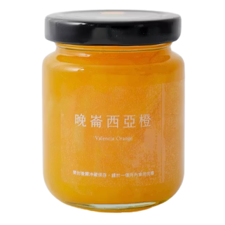

晚崙西亞橙 果醬
晚崙西亞橙這個美麗的水果，幾乎僅栽種在台東，尤其是東河一帶，它擁有山和海的孕育，比台灣柳丁酸一些，又比香吉士再甜一些，籽少果肉多汁而且富有香氣，用來製作果醬是最好不過了，最喜歡將它加在優格或氣泡水裡，柑橘的香氣是春天的滋味。
柑橘的香氣是春天的滋味
NT$290
商品介紹
晚崙西亞橙 —— 這個擁有美麗名字的水果，幾乎僅栽種在台東，擁有山和海的孕育，比台灣柳丁酸一些，又比香吉士再甜一些，籽少果肉多汁而且富有香氣，因此也被俗稱「香丁」，這樣的品種用來製作果醬是最好不過了。
關於晚崙西亞橙這個名字，目前被廣為流傳的是當時在美國許多地區有種植這個品種，而後有專家覺得它與西班牙的晚崙西亞地區的甜橙很像，因此命名它為「晚崙西亞橙」。而晚崙西亞橙在日治時代就被引進台灣，而在溫差大的台東成為了它最好成長的地方，也因為較少人栽種，西半部的大家幾乎很少聽過。
處理柑橙類水果的方法有很多，我們選擇了工序較多的那種，從煮果去雜味、去皮切細絲、一瓣瓣取果肉、剝膜去籽熬出天然果膠，一步一步都無法減少。整體口感是滑順不砸口，還有點像果凍一樣，吃到橙皮時又還嚼出專屬的橙苦香味（懂吃柑橙類果醬的人一定知道）。
推薦搭配
- 抹在土司或麵包上，柑橘的香氣包裹著麵包，味覺被拉高了層次！
- 最愛加進氣泡水或雪碧，再丟薄荷葉和檸檬片進去，完全消暑。
- 加在優酪乳裡，滿滿的果肉，全家大小都很喜歡。
規格說明
150g ± 5 / 台東晚崙西亞橙、細砂糖、檸檬汁
保存方式
未開封 可常溫放置陰涼處或直接冷藏，可保存約一年。
開封後 請務必冷藏保存，建議一個月內食用完畢。
✦ 請使用乾淨乾燥的器具挖取，才不會變質喔！
評價 (3)
4.9
根據 3 則評論
陳
第一次吃到晚崙西亞橙，香氣真的很特別，比一般的柳橙醬更濃郁。果皮處理得很好，只有微微的苦味，配吐司非常搭。
L
口感很像果凍，滑順好吃。加在氣泡水裡真的是絕配，夏天喝很消暑，已經回購第二罐了。
W
很喜歡這種帶點大人味的柑橘果醬，不會死甜。果肉給得很大方，每一口都吃得到。